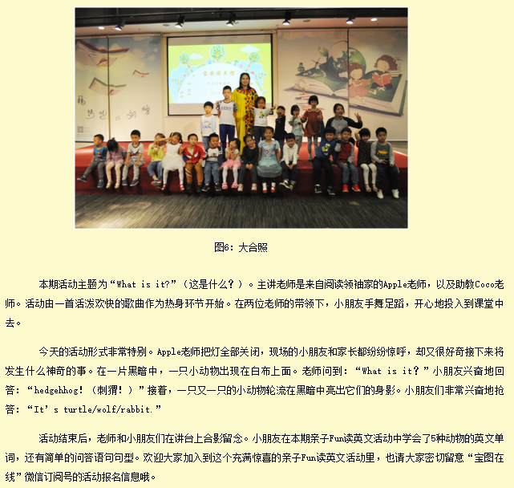

2019年6月22日上午10:00，由宝安区图书馆青少服务部组织策划的宝图亲子Fun读英文活动（2019年第6期）在负一楼多功能活动室举行。本期活动由宝安区图书馆主办，深圳市阅读领袖家协办，共27组亲子家庭，59人参加了本次活动。宝安区图书馆为了激发少儿读者对英语学习的兴趣，以英语图画书为载体，通过游戏、音乐、戏剧等形式，充分调动少儿读者参与活动的积极性，在轻松欢乐的气氛中进行英语启蒙学习。
本期活动主题为“The Wheels On The Bus”（公交车上的轮子）。主讲老师是来自阅读领袖家的Apple老师，以及助教Coco老师。以两首欢乐的英文歌曲热身后，本次活动正式开始啦！
“The Wheels On The Bus”是一首重复律动的英文童谣。它通过郎朗上口的方式，让小朋友在读图画书唱童谣的过程中，不知不觉学到了关于公交车的很多知识。Coco老师在白板上画了一辆不完整的公交车，Apple老师轮流邀请小朋友上台把缺少的部分放到正确的部位，并且跟着老师唱一小段歌儿。今天的小朋友非常积极地参与到活动中去，踊跃地举手，勇敢地站到讲台上回答问题。
最后，Apple老师邀请所有小朋友组成一辆超长的公交车，一边唱着童谣一边围绕着活动室转圈。小朋友们开心地唱唱跳跳，在愉快的气氛中学习到了公交车的知识。
活动结束后，大家在讲台上留下合影。小朋友在本期亲子Fun读英文活动中学会了5种关于公交车的英文单词，以及公交车会发出的象声词。欢迎大家加入到这个充满惊喜的亲子Fun读英文活动里，也请大家密切留意“宝图在线”微信订阅号的活动报名信息哦。
